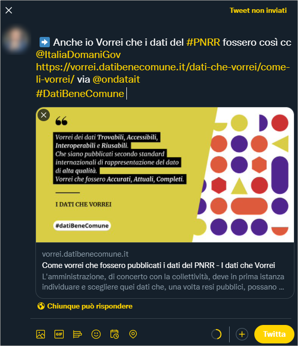

Partecipa¶
I dati che vorrei è progetto che si svilupperà durante il 2022 e tra la prime cose che vedrai evolvere ci sarà ad esempio la pubblicazione delle sezioni dedicate ad alcuni degli obiettivi trasversali del PNRR.
Per seguire il progetto e/o parteciparvi, puoi farlo in questo modo:
- leggere 📣News di datiBeneComune e/o iscriverti al relativo feed RSS;
- correggere e fare proposte sui contenuti di questo sito. Questo spazio è aperto sia in termini di licenza, che modalità di scrittura: è ✏️ ospitato qui e (se sai usare GitHub) puoi fare le tue proposte di modifiche/integrazioni dei testi;
- utilizzare lo spazio di progetto per le discussioni.
Inserisci un tasto azione nei tuoi spazi online¶
Il tasto sottostante (provalo) fa partire al click un messaggio su Twitter, per dire che anche tu vuoi i dati del PNRR, come descritto in queste pagine.
Se vuoi inserire qualcosa di simile sul tuo sito, in altri spazi online, ecc., basta che associ a un pulsante, un'immagine, o un testo, questo lungo hyperlink:
https://twitter.com/intent/tweet?original_referer=https%3A%2F%2Fvorrei.datibenecomune.it%2Fdati-che-vorrei%2Fcome-li-vorrei%2F&ref_src=twsrc%5Etfw%7Ctwcamp%5Ebuttonembed%7Ctwterm%5Eshare%7Ctwgr%5E&text=%E2%9E%A1%EF%B8%8FAnche%20io%20Vorrei%20che%20i%20dati%20del%20%23PNRR%20fossero%20cos%C3%AC%20cc%20%40ItaliaDomaniGov&url=https%3A%2F%2Fvorrei.datibenecomune.it%2Fdati-che-vorrei%2Fcome-li-vorrei%2F&via=ondatait%0D%23DatiBeneComune

Contatti¶
Se vuoi un contatto diretto per approfondire, puoi scrivere un'email a info@datibenecomune.it .